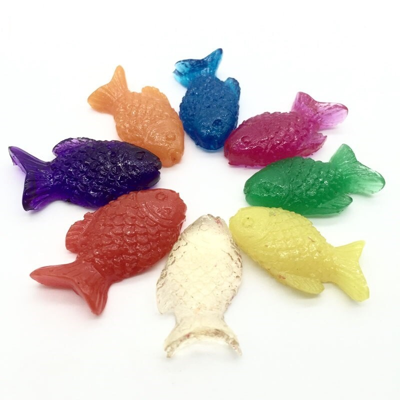

Welcome to vandens
Vandens Smulkmenos | Šildymas | Santechnika | Vandentiekis | Vandens filtrai
2020.10.27 07:36
Pradžia Paskyra Krepšelis Užsakyti Krepšelis 0 prekė(s) - 0.00€ Tuščia! prisijungti susikurti paskyrą ŠILDYMAS Kieto kuro katilai Elektriniai katilai Elektrodiniai katilai Geoterminiai katilai Vandens šildytuvai Židiniai Katilas viryklė Radiatoriai Išsiplėtimo indai Akumuliacinės talpos Įdėklai ir kaminai VANDENTIEKIS Automatinės vandens tiekimo sistemos (hidroforai) Hidroforai (slėgio indai) Drenažiniai siurbliai Fekaliniai siurbliai Fontaniniai siurbliai Baseininiai siurbliai Benzininiai siurbliai Cirkuliaciniai siurbliai Vakuuminiai siurbliai Cheminiai siurbliai Membraniniai siurbliai Aukšto slėgio plovimo siurbliai Gręžinių siurbliai Apsaugos pultai Panardinami siurbliai šuliniams Nepanardinami siurbliai Kanalizacinės stotelės Dažnio keitikliai Vandens skaitikliai Atsarginės dalys SANTECHNIKA Dušo paneles Infraraudonųjų spindulių saunos Unitazai Daugiasluoksnis vamzdis ir jungtys PE vandentiekio vamzdžiai ir jungtys PPR vandentiekio vamzdžiai ir jungtys VANDENS FILTRAI Geriamam vandeniui Visam namui Filtrų korpusai Filtrų kasetės Vandens jonizatoriai KONTAKTAI, TEL.861041206 GALIMA DERĖTIS
Rekomenduojami
Būtina sureguliuoti: Oro priešslėgis turi būti 0,2 bar mažesnis už siurblio įsijungimo ribą. Slėgių skirtumas negali būti didesnis nei 2 ...
52.13€ HIDROFORAS 24H-PWBAprašymas: Siurblio korpusas - ketus. Darbo ratas - ketus. Smulkintuvas - plieninis Maksimalus kėlimo aukštis 7 m. Maksimal...
145.97€ XSP14-7/1.1ID 220V FEKALINIS SIURBLYS SU SMULKINTUVUSiurblio korpusas - nerūdijantis plienas. Darbo ratas - bronza. Maksimalus kėlimo aukštis 58 m. Maksimalus našumas 45 l/min. ...
140.47€ 4DWPm750S PANARDINAMAS SIURBLYSGamintojas: TERMODINAMIK (Turkija) Galingumas, KW: 23-34,9* Sekcijų skaičius: 5 Katilo svoris, kg: 280 Vandens...
1,014.25€ Katilas TERMOCAST MAXI 5Tūris, l 95 Galingumas, kW 2.0 / 17.0 Išmatavimai AxPxI, mm 881x524x524 Svoris, ...
307.58€ Vandens šildytuvas okc 100, vertikalus Pakabinami kombinuotiYPATUMAI: Naudojama galia - P1[W] 850 Naudojama galia - P2[W] 600 Įtampa [V] 1~230 Nominali srovė [A] 3,9 Maks. našu...
185.36€ D-BOOST850/45 230V/50Hz SIURBLYSPakėlimo aukštis - 8m. Našumas - 4,5 m³/val. Variklio galingumas - 600 W Maksimali skysčio temperatūra: 50 ° C Maksimali a...
217.22€ WC600A SIURBLYSVienfazis. IP 65 Tinka iki 1,1 kW 230V varikliams. Komplekte slėgio daviklis 0 - 16 bar - 1/4" ...
306.42€ DAŽNIO KEITIKLIS 1,1 KW ARCHIMEDE IMMP1,1WVandens Smulkmenos | Šildymas | Santechnika | Vandentiekis | Vandens filtrai
Apie mus
Prekyba, montavimas ir konsultavimasKlientų aptarnavimas
Apie mus Grąžinimas ir garantijos Taisyklės Susisiekite Grąžinimai Svetainės medisPaskyra
Paskyra Užsakymų istorijaSocialūs
Facebook Vandens smulkmenos